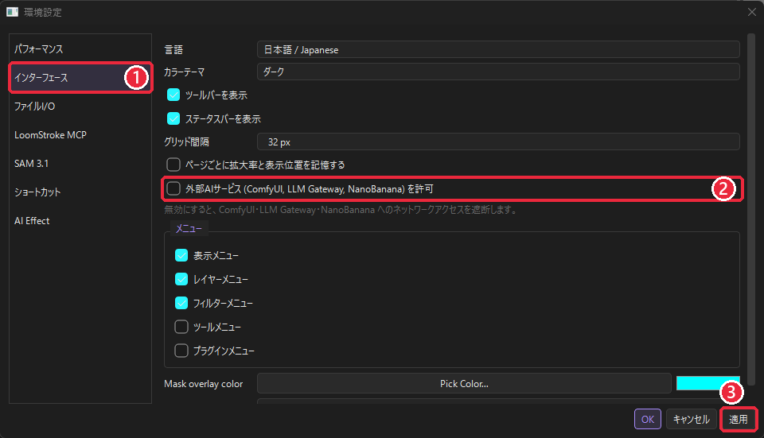
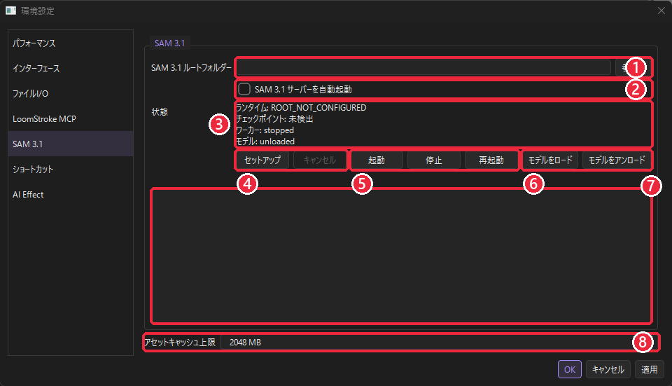

دليل تثبيت SAM 3.1
لـ LoomStroke AI Select سنتوضّح كيفية إعداد SAM 3.1 للاستخدام (الاختيار التلقائي من خلال الذكاء الاصطناعي). سيستغرق العملية تقريبًا 30 دقيقة إلى ساعة (قد يستغرق وقتًا أطول حسب سرعة الإنترنت الخاصة بك).
1. ما هو SAM 3.1
SAM 3.1 هو الذكاء الاصطناعي للتمييز في الصور (التمييز المكاني) الذي أصدرته شركة Meta. يستخدم LoomStroke الوظائف التالية من هذا النظام.
- أداة الاختيار بالذكاء الاصطناعي: من كلمات مثل 'الشعر' أو 'الإنسان' أو من خلال النقر، يُنشئ اقتراحات لمنطقة الاختيار.
- مربع اختيار النماذج الذكية (AI Select Candidates)؛ تجميع المُقترحات المُكتشفة ودمجها في طبقة واحدة.
- مربع مساعد الماسكات للرسومات (Manga Mask Assistant)يُستخدم لجمع مساحات التغطية من صفحات الرسوم المتحركة مثل الأجزاء، التفاصيل، الأشخاص إلخ.
SAM 3.1 هو برنامج منفصل عن LoomStroke نفسه،بيئة تشغيل مخصصة يُشغل كخادم صغير يعمل على جهازك الشخصي. يُنشئ زر 'الإعداد' في LoomStroke هذا البيئة تلقائيًا، ولكن يجب أن تُحمّل النموذج نفسه (النقطة المُختارة) من قبلك يوجد حاجة. لا يقوم LoomStroke بتنزيل النماذج تلقائيًا.
2. المُطلوب
| العنصر | المحتوى |
|---|---|
| OS | Windows 10 / 11（64 bit） |
| GPU | نوصي بشدة باستخدام بطاقات GPU من NVIDIA (مدعومة بـ CUDA)أثناء اختبارات التطوير (RTX 4090)، استُخدمت كمية تصل إلى حوالي 4.6 جيجابايت من ذاكرة GPU لمعالجة صورة واحدة. من الأفضل أن تمتلك على الأقل 8 جيجابايت من ذاكرة GPU. رغم أن الجهاز لا يحتوي على GPU، يمكن تثبيت البرنامج، ولكن في اختبار الأداء الأخير سيُعرض "لا يمكن استخدام CUDA" ويُوقف التثبيت (لن يُمكن استخدام المعالجات فقط بسرعة مُلائمة للتطبيق). |
| مُشغل NVIDIA | مُشغل جديد. يتم التثبيت من خلال إدخال PyTorch 13.0 لـ CUDA، لذا افتح موجه الأوامر و nvidia-smi قم بتشغيله حتى تظهر القيمة في 'CUDA Version' في الزاوية العلوية اليمنى 13.0 فما فوق تأكد من ذلك. إذا لم يكن متوفرًا، قم بتحديث برنامج NVIDIA من الموقع الرسمي. |
| Python | 3.12 أو أحدث مُوصى به (3.13). يجب أن يكون متاحًا على جهاز الكمبيوتر الخاص بك (بخلاف LoomStroke)الخطوة 1）。 |
| مُساحة التخزين المتوفرة | مُعيار أكثر من 15 جيجابايت（النموذج حوالي 3.5 جيجا بايت + PyTorch وما إلى ذلك بكميات متعددة + مساحة العمل). |
| الإنترنت | مطلوب فقط عند التثبيت (يتم تحميل ملاذ بحجم ملاذات مئات الميغابايت باستخدام PyTorch). |
| حساب Hugging Face | مطلوب للحصول على النموذج (مجانًا). |
3. إجراءات التثبيت
الخطوة 1: تثبيت Python 3.12 أو أحدث
- python.org قم بتنزيل مُثبت Windows لـ Python 3.13 (أو 3.12).
- تشغيل المُثبت، و「py launcher」أبقِ الإعدادات التي تحتوي على (مُشغل Python) كما هي عند التثبيت.
- قم بتنفيذ ما يلي في واجهة الأوامر،
Python 3.13.xسيكون هذا مكتملًا إذا عُرض كما في المثال.py -3.13 --version
التركيب هو py -3.13 → py -3.12 → py -3 → python بمُتابعة التسلسل، يُبحث عن بايثون، ويُستخدم أول نسخة تصل إلى 3.12 أو أعلى.
الخطوة 2: إنشاء مجلد لـ SAM 3.1
وضع النموذج والبيئة التشغيلية المجلد الرئيسي سيتم إنشاؤه على محرك يحتوي على مساحة فارغة كبيرة،مسار يحتوي فقط على أرقام وحروف إنجليزية يُوصى بعملها باستخدام.
例：D:\SAM31يُوضع هذا المجلد فيه نموذج من خطوة 3، ويُستخدم في إعداد خطوة 5 لبيئة التنفيذ (runtime سيُنشأ المجلد (المسار) تلقائيًا.
الخطوة 3: الحصول على النموذج (النقطة المُحددة)
نموذج SAM 3.1 موجود على Hugging Face facebook/sam3.1 مُتاح للجمهور. هذه الصفحة هي يجب الموافقة على الوصول (مُحمي ببوابة)إذًا.
- Hugging Face قم بإنشاء حساب وتسجيل الدخول.
- facebook/sam3.1 وأقر بشروط الاستخدام، ووافق على مشاركة بيانات الاتصال، ثم اطلب الوصول. قد يستغرق الأمر بعض الوقت حتى يتم الموافقة.
- بعد الموافقة، من خلال علامة التبويب "الملفات والنسخ"، كل الملفات من المُخزن（
sam3.1_multiplex.pt(حوالي 3.5 جيجابايت) وconfig.jsonتنزيل الملفات المُحددة (مثل ملفات الإعداد) ووضعها في المجلد المذكور في الخطوة 2.
إذا كنت مُعتادًا على الأوامر، يمكنك جمع المفاتيح من خلال الأداة الرسمية من Hugging Face (أعد التحقق من التصريح عبر المتصفح قبل تنفيذه).
py -3.13 -m pip install -U huggingface_hub
hf auth login
hf download facebook/sam3.1 --local-dir D:\SAM31hf auth login الآن، لصق الرمز المخصص للقراءة الذي أنشأته في إعدادات Hugging Face (Access Tokens).hf إذا لم يتم العثور على الأمر، فقم بتفعيل خيار "Add python.exe to PATH" أثناء تثبيت Python، ثم أعد التثبيت، أو قم بتنزيله من خلال المتصفح.
يُوضع النموذج في مستوى الجذر أو في مستوى تحته مباشرةً checkpoints·model يمكن وضعه في مجلد فرعي. اسم الملف هو sam3.1_multiplex.pt إذا كان ذلك، فاستخدمه، وإذا كان باسم مختلف فـ .pt يُستخدم فقط عندما يكون هناك ملف واحد (إذا كان هناك أكثر من ملف، فلا يمكن تحديده وسيُعامل كـ "غير موجود"). لا يقوم LoomStroke بنسخ أو نقل النماذج.
الخطوة 4: ترخيص الاتصال مع الخدمات الخارجية في LoomStroke
يُسمح بالاتصال لتنزيل أدوات مثل PyTorch أثناء إعداد النظام.

- تحرير › إعدادات البيئة（Ctrl+,افتح )،1 اختر "الواجهة".
- 2 أعد تفعيل 'السماح بخدمات الذكاء الاصطناعي الخارجية (ComfyUI، بوابة LLM، NanoBanana)'.
- 3 انقر على 'تطبيق' لحفظه.يُعرض التثبيت على الإعدادات المحفوظة، لذا يجب تفعيله فقط دون تطبيقه، وإلا سيتوقف عند رسالة "يُطلب ترخيص الشبكة".
الخطوة 5: ابدأ التثبيت

- القائمة اليسرى في إعدادات البيئة SAM 3.1 نختار ذلك.
- 1 في "الاستكشاف..." لـ "مجلد جذر SAM 3.1"، اختر المجلد كما في الخطوة 2.3 إذا ظهر اسم الملف في حالة 'النقطة المُحددة'، فهذا يعني أن النموذج تم العثور عليه.
- 4 الإعداد نضغط على هذا.7 يُظهر مسار التقدم في شريط السجل، ويُنتقل تدريجيًا إلى 10 مراحل متتالية.
| المرحلة | المحتوى | مدة التقدير |
|---|---|---|
| 1. التحقق من المجلد | تحقق من وجود المجلد الرئيسي وتمكينه من الكتابة إليه,runtime·logs·state نُسَبُ فولدر. | مباشرًا |
| 2. التحقق من Python | يُبحث عن Python 3.12 أو أحدث. | مباشرًا |
| 3. إنشاء البيئة | أدخل بيئة افتراضية مخصصة لـ SAM 3.1 (runtime\venv يُنشأ هذا. لا يُؤثر على بيئة LoomStroke الأساسية. | بمدة تصل إلى دقيقة واحدة |
| 4. إعداد pip | يُستعد أداة التثبيت (pip) لوضع المكونات. | مباشرًا |
| 5. تثبيت PyTorch | إذا تم اكتشاف رقاقة NVIDIA، فقم بتنزيل الإصدار الذي يعتمد على CUDA، وإلا فقم بتنزيل وتركيب إصدار CPU من PyTorch. | من بضع دقائق إلى بضع عشرات من الدقائق（بعدد ملايين جيجابايت） |
| 6. تثبيت SAM 3.1 | أدخل المكونات المطلوبة، وبرنامج SAM 3 (مُستند على GitHub من facebookresearch/sam3). | بضع دقائق |
| 7. التحقق من النموذج | يُتحقق من وجود النموذج في مجلد الجذر (لا يتم تحميله). | مباشرًا |
| 8. اختبار التشغيل | قم بتحميل النموذج وتأكد من أن النموذج مخصص لـ SAM 3.1 ويدعم GPU (CUDA). | بضع دقائق |
| 9. تشغيل العامل | يُبدأ وحدة المعالجة (الـ Worker) الخاصة بـ SAM 3.1. | ثواني قليلة |
| 10. التحقق من الاستجابة | تأكد من أن العامل يرد بشكل صحيح. | مباشرًا |
في نهاية السجل 「SAM 3.1 Ready」سيُعرض هذا كمُكتمل.3 يظهر شريط الحالة على الشكل التالي: "التشغيل: جاهز"، "النقطة المُختارة: sam3.1_multiplex.pt"، "العامل: يعمل"، كما يُعرض اسم وحدة المعالجة (CUDA).OK لإغلاق إعدادات البيئة.
الخطوة 6: التحقق من العمل
- افتح الصورة على لوحة العمل، ثم اختر من شريط الأدوات AI Select اخترها (انقر وثبّت على زر المجموعة المختارة).
- في شريط الخصائص، في الحقل "Prompt"، يُكتب ما ترغب في إيجاده (مثلاً:
hair、person、flower)، ثم اضغط على "تشغيل". - إذا عُرضت الاقتراحات بوضع لون، فهذا يعني النجاح. عند الضغط على 'Apply'، تصبح المنطقة المختارة مُختارة.
في المرة الأولى للتشغيل، يتم تحميل النموذج (حوالي 3.5 جيجابايت) إلى وحدة GPU، مما يستغرق وقتًا قصيرًا. إذا توقفت الوحدة، فإنها تُعاد تشغيلها تلقائيًا أثناء التنفيذ.
4. شاشة إعدادات SAM 3.1
إعدادات البيئة › كل ميزة في SAM 3.1 (الرقم هو الخطوة 5 لصور محددة).
| العنصر | المحتوى |
|---|---|
| 1 مجلد الجذر لـ SAM 3.1 | مجلد يُوضع فيه النموذج والبيئة التشغيلية (اختر من خلال "اختر..." ). |
| 2 تشغيل خادم SAM 3.1 تلقائيًا | عند التفعيل، يُبدأ العامل في تشغيل LoomStroke عند بدء التشغيل (لا يتم تحميل النموذج قبل استخدامه فعليًا). القيمة الافتراضية هي مُعطّلة. حتى في الحالة المُعطّلة، يُبدأ العامل تلقائيًا عند تنفيذ AI Select. |
| 3 الحالة |
التشغيل الزمني: جاهز إذا كنت جاهزًا. إذا كان هناك شيء مفقود، سيُعرض رمز سبب (قائمة）。 نقطة التحقق اسم ملف النموذج المُكتشف (إذا لم يُكتشف، فسيكون: غير مكتشف). العامل مُشغل (مُشغل) / مُوقف (مُوقف). النموذج مُحمَّل (تم تحميله على GPU) / غير مُحمَّل (لم يُحمَّل بعد) CUDA: يُعرض اسم الرقابة المستخدمة أثناء تشغيل العامل. |
| 4 تثبيت / إلغاء | استعد بيئة التنفيذ / توقف التحضير في أي وقت. |
| 5 البدء / التوقف / إعادة البدء | قم بتشغيل العامل يدويًا. |
| 6 تحميل النموذج / إزالة النموذج | تحميل النموذج إلى/إزالةه من ذاكرة GPU (تبقى العمال مُشغلين). |
| 7 مُدخل السجل | يعرض تفاصيل الإعدادات والبدء، وتفاصيل الأخطاء وطرق التعامل معها. |
| 8 الحد الأقصى لخزينة الموارد | الحد الأقصى لسعة التخزين لنتائج التحليل (مثل المُستشعرات إلخ). 64 إلى 262144 ميغابايت، القيمة الافتراضية 2048 ميغابايت. |
5. محتوى المجلد
D:\SAM31\ ← ルートフォルダー（手順 2）
├ sam3.1_multiplex.pt ← モデル（手順 3 で自分で置く）
├ config.json ほか ← モデルの設定ファイル（同上）
├ checkpoints\ / model\ ← （直下に置かない場合のモデルの置き場所）
└ runtime\ ← セットアップが自動で作成
├ venv\ ← SAM 3.1 専用の Python 環境
├ sam3-src\ ← （任意）オフライン導入用の SAM 3 ソース
├ logs\setup.log ← セットアップのログ
├ logs\worker.log ← ワーカーのログ
└ state\6. إدارة ذاكرة GPU
يستخدم SAM 3.1 نموذجًا في ذاكرة GPU. عند إجراء عمليات أخرى على GPU مثل ComfyUI، يجب أن تُفرغ الذاكرة بعد الانتهاء لضمان الاستقرار.
| إلغاء تحميل SAM من الذاكرة في لوحة اختيار الذكاء الاصطناعي | يُنزل النموذج من ذاكرة GPU. ويُحمَّل تلقائيًا عند الاستخدام التالي. |
| إعدادات البيئة › SAM 3.1: إلغاء تحميل النموذج | نفسه |
| إعدادات البيئة › إيقاف SAM 3.1 | يُوقف الوحدة نفسها (سيتم تفعيلها تلقائيًا في التنفيذ التالي). |
7. في حال عدم التوافق
إذا فشل، سيظهر في مربع السجل [コード] 内容 سيتم عرض طريقة التعامل معها وطريقة التصرف. تفصيل السجلات في ルートフォルダー\runtime\logs\setup.log بشكل (التثبيت) و worker.log موجود في (التشغيل).
| الكود | المعنى | التعامل |
|---|---|---|
| ROOT_NOT_CONFIGURED | الدليل الرئيسي غير مُحدد | إعدادات البيئة › اختر مجلد الجذر في SAM 3.1. |
| ROOT_INVALID | الدليل غير موجود أو لا يمكن الكتابة فيه | اختر مجلدًا موجودًا وقابلًا للكتابة. |
| SETUP_REQUIRED | البيئة التشغيلية غير متوفرة بعد | سيتم تنفيذ عملية التثبيت. |
| CHECKPOINT_MISSING | النموذج غير مُكتشف / ليس نموذجًا مخصصًا لـ SAM 3.1 | الخطوة 3 كما هو مطلوب sam3.1_multiplex.pt وأضع ملف الإعدادات في مجلد الجذر..pt إذا كانت هناك أكثر من واحدة، يُنقل العناصر غير الضرورية. |
| PYTHON_UNSUPPORTED | لم يتم العثور على Python 3.12 أو أحدث | الخطوة 1 أدخل Python من خلاله (يجب أن يكون متوفرًا من خلال py launcher). |
| NETWORK_CONSENT_REQUIRED | لا يُسمح بالتنزيل | الخطوة 4 وتفعيل 'إذن خدمة الذكاء الاصطناعي الخارجية' في التطبيق قم بذلك، ثم أعد التكوين مرة أخرى (سيُظهر الرسالة "الخصوصية"، لكن الإعدادات موجودة في صفحة الواجهة). |
| VENV_CREATE_FAILED | لا يمكن إنشاء بيئة مخصصة | تحقق من مساحة التخزين المتوفرة وصلاحيات المجلد ثم أعد تشغيل البرنامج. |
| PIP_FAILED | لا يمكن التحضير لـ pip | قم بتثبيت مرة أخرى. |
| TORCH_INSTALL_FAILED | فشل في تثبيت PyTorch | تحقق من الشبكة وملف setup.log ثم أعد تشغيل البرنامج. |
| SAM31_INSTALL_FAILED | فشل في تثبيت SAM نفسه أو اختبار تشغيله | يُتحقق من ملف setup.log. أما التثبيت دون اتصال،الفصل 8。 |
| CUDA_UNAVAILABLE | لا يمكن استخدام GPU (CUDA) | تحقق من رقاقة NVIDIA وبرامجها. لا يكفي معالج CPU وحده لتقديم سرعة عملية. |
| CUDA_MISMATCH | لا تتوافق PyTorch مع دрайвер CUDA | قم بتحديث برنامج NVIDIA ثم أعد التثبيت. |
| WORKER_START_FAILED | لا يُمكن تشغيل العامل | تحقق من ملف worker.log. |
| HEALTH_FAILED | يُشغل ولكن لا يُستجيب | جرب إعادة التشغيل، وإذا لم ينجح، فتحقق من ملف worker.log. |
| MODEL_LOAD_FAILED | فشل في تحميل النموذج | تحقق من ملف worker.log. إذا كان ملف النموذج مُتحوّل، فأعد تثبيته. |
| OOM | نقص في ذاكرة GPU | أغلق تطبيقات مثل ComfyUI أو تطبيقات أخرى تستخدم الرسومات المُعتمدة على GPU، أو أطلق مساحة ذاكرة مُخصصة لها ثم أعد تشغيله. |
| COMPATIBILITY_UNSUPPORTED | النسخة المدخلة من SAM 3 غير مدعومة | انتظر تحديث LoomStroke، أو ابلغ المطورين. |
| CANCELLED | تم إلغاء التثبيت | إذا أردت، يمكنك الضغط مجددًا على "الإعداد" لاستئناف العملية من حيث التقدم. |
إذا ظهرت رسائل مثل "SAM 3.1 is not set up" عند استخدام أداة في AI Select، فإنها تُوافق على الجدول المذكور أعلاه. يُرجى التحقق من حالة SAM 3.1 في إعدادات البيئة > حالة SAM 3.1.
8. التثبيت والحذف بالكامل دون اتصال بالإنترنت
إدخال SAM 3 بشكل أونلاين
على GitHub facebookresearch/sam3 الكامل (pyproject.toml المجلدات التي تحتوي على ルートフォルダー\runtime\sam3-src إذا أُدرج في هذا المكان، فإن SAM 3 سيُستخرج من هذا المكان. ولكن يجب تنزيل المكونات مثل PyTorch من الشبكة.
حذف
- إعدادات البيئة › في SAM 3.1، اضغط على 'إيقاف' لوقف العامل.
- يُحذف المجلد الجذري بالكامل (يحتوي فقط على بيئة مخصصة ونماذج، ولا يؤثر على LoomStroke أو أي برمجيات بيئة بيئة برمجة أخرى).
- الإعدادات > مسار SAM 3.1، وقم بمسح الحقل وانقر على 'موافق'.
يُرجى التحقق من شروط استخدام نموذج SAM 3.1 على صفحة facebook/sam3.1 في Hugging Face.
تم إعداد هذا الدليل بناءً على تنفيذ إصدار LoomStroke التطويري بتاريخ 2026-10-16.العودة إلى الدليل